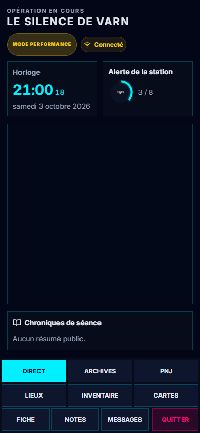

T4 · Direct intégré
Application réelle, campagne fictive de Varn, le 6 octobre 2026. Projection, chroniques et horloges occupent des zones distinctes. Les onglets et actions restent nommés dès 360 px. J1 reste en cours.
Téléphone · Direct
L’horloge statique de ces captures suit un changement réellement envoyé après la connexion. Le défaut existant du snapshot initial est consigné dans le relevé.